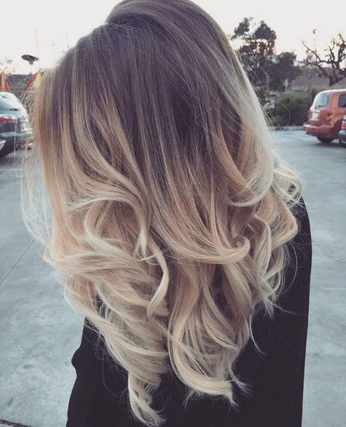
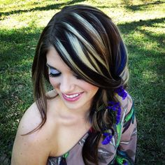
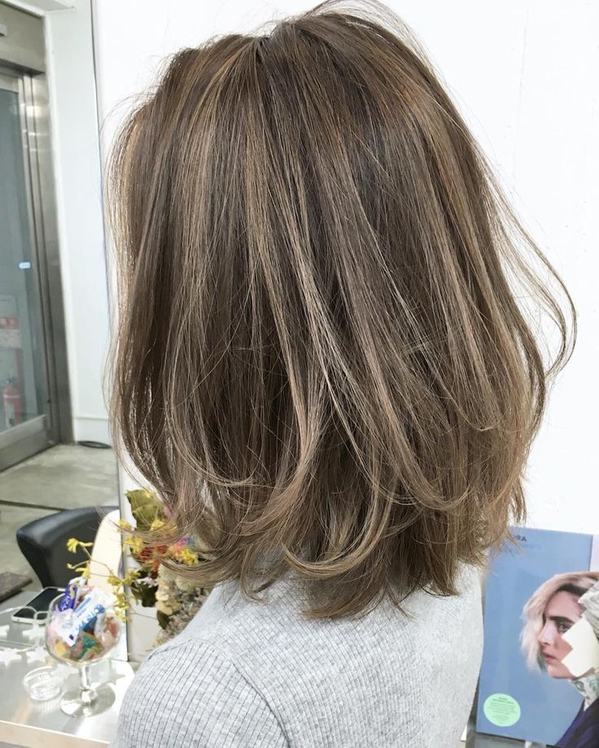
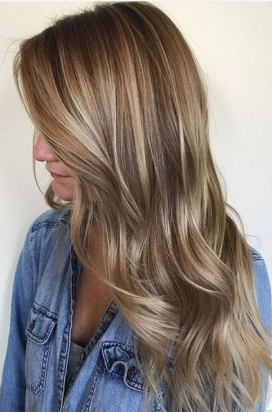
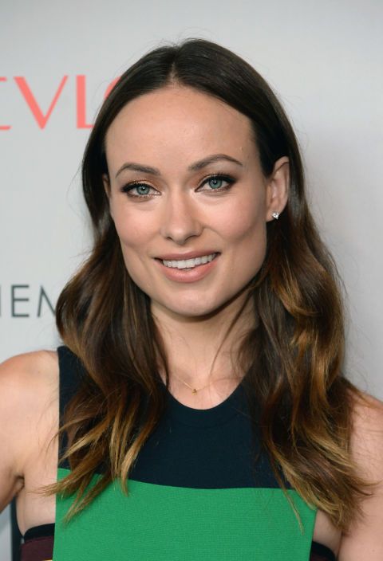
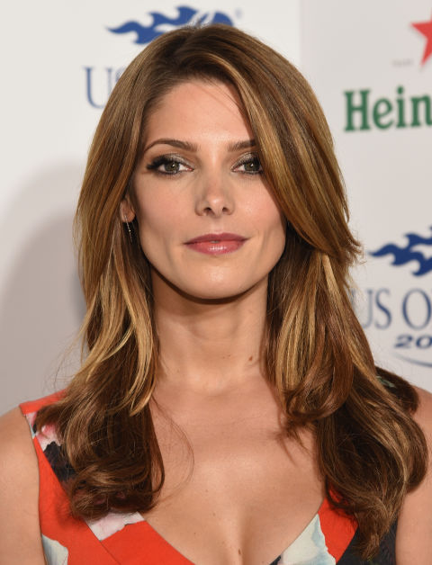
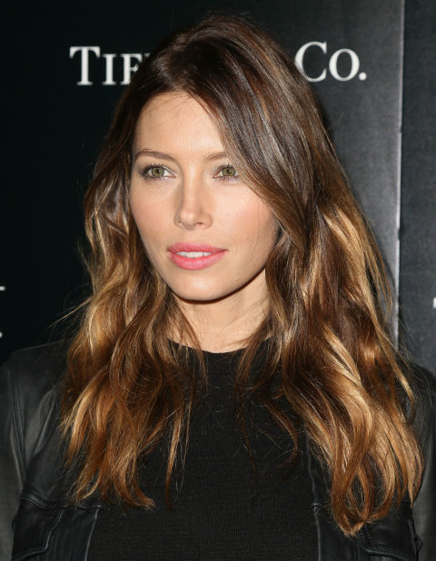
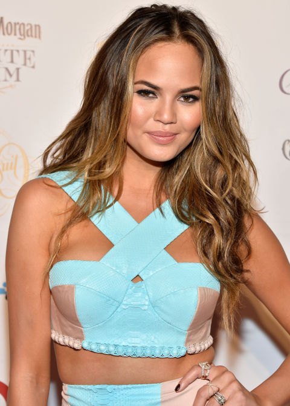
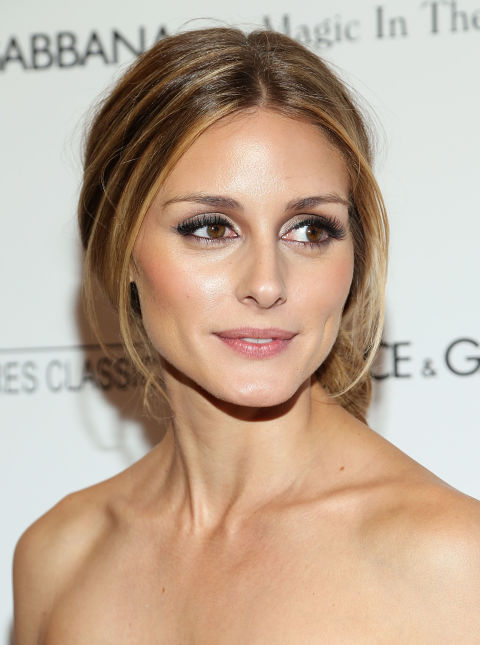
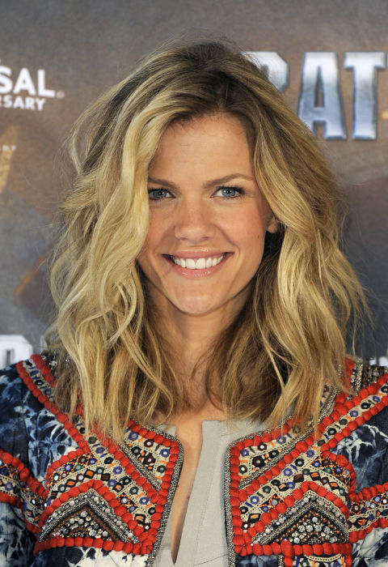

Понятие Highlights & Lights
Изучая рекомендации по цвету волос для типажей Кибби, часто встречаются слова - Highlights (мелирование) и lights (блики), а также, что они могут быть и едва заметными (subtle) и, наоборот, даже очень драматическими (dramatically streaked).
Highlights (lights) - это осветление отдельных прядок волос, в процессе которого может быть использована фольга, либо - нет (балаяж). Помимо мелирования существует затемнение прядок (lowlights) или прядки делают разноцветными - колорирование. Все эти “игры с цветом” прядками не ограничивается, есть еще и вытягивание цвета по длине волос (омбре). Об этом чуть позже поговорим.
Начнем с того, что Кибби упоминает в своих советах:
- No highlights. В рекомендациях у некоторых типажей Кибби предлагает воздержаться от мелирования (т.е. красим волосы одной краской):
- Sweep of color. Для кого-то и омбре больше подойдёт:

- Rich lights, streaks. Кому-то Кибби говорит про яркое, интенсивное мелирование (заметные, контрастные пряди на общем фоне):

- Subtle lights, soft frost. Есть те, у кого в рекомендациях значатся едва заметное мелирование и блики:

- lights, frost. Без обычного мелирования тоже не обошлось:

Еще в рекомендациях часто попадалось слово “soften” - смягчение. Например, вы покрасили волосы и цвет оказался “диким” на ваш взгляд, т.е. слишком яркий или темный. Понятно, что цвет изменится в течение 3-4 недель, станет светлее и тусклее, иначе говоря станет таким, как на коробке с краской, или еще больше вымоется, “смягчится” (чаще всего случается с красками рыжих оттенков). Есть способы для нетерпеливых натур, которые хотят поскорее “выветрить” всю эту яркость и уже приблизиться к желаемому цвету и делают это с помощью соды; погуглите, если интересно и не лень.
Некоторым типажам, в основном c драматическим “налётом” или всевозможным гаминам
(D, TR, G, FG, SG), надо поддерживать яркость цвета постоянно, избегая вот этого
смягчения (таяние цвета). У других персонажей Кибби-типологии в общих
рекомендациях встречается фраза “избегать драматической яркости цвета” (SN, SC),
а смягчение цвета им на руку. Но есть и такие, которым нужно добиваться
натуральных цветов, не выходя за грани - не перебарщивая с яркими цветами, если
только такой цвет не заложен в вас Природой-матушкой, либо чересчур смягчать
оттенок волос (FN, N, DC, C, R). Конкретные рекомендации к своему типажу можно
найти по Тэгу - кибби.

Все что находится в скобках - значит, что данный способ подходит только тем, кто указан в скобках (exc. Dark - всем можно попробовать, кроме темноволосых; P (lowlights) - можно попробовать только затемнить прядки. Высокий контраст внешности - когда есть ощутимая разница в цвете/светлоте между волосами/кожей/глазами (Элизабет Тейлор, Шер), низкий контраст внешности - когда волосы/глаза/кожа сливаются (смешиваются), образуя монохроматический, мягкий облик (Принцесса Диана, Джейн Фонда).
Самый неясный типаж - это Софт Драматик, т.к. у него рекомендации расходятся в точке “едва заметное мелирование” :) В общих рекомендациях: “Цвет волос должен быть интенсивным, ярким, четким. При выборе ненатуральных оттенков, свой взор направлять на драматические и выделяющиеся цвета (иссиня-черный, огненно-рыжий, платиновый или яркий желтый блонд). Если использовать мелирование, то выбирать драматический вид (яркое мелирование). Если седина проявилась в “театральном (драматическом) ключе” (т.е. четкими прядками), подчеркивать ее балаяжем. Чем интенсивнее цвет волос, тем лучше. ИЗБЕГАТЬ: Едва заметного мелирования или деликатного осветления волос.”
В дополнительных рекомендациях в конце книги (то, что я перевожу и делаю посты): “В целом, лучше всего красить волосы полностью в один цвет, можно добавить после этого едва заметное мелирование для небольшого осветления цвета волос. ИЗБЕГАТЬ: Очень приглушенных (мягких) цветов, а также чрезмерного осветления без интенсивной или яркой базы (исключая Платиновый).
Подходит ли едва заметное мелирование для такой яркой личности, как Софт Драматик, как вы думаете? Смущает и тот факт, что для Холодных цветотипов с низкой контрастностью тот же совет использовать едва заметные блики.
Немного о разновидностях Highlights & Lights
Ribboned (ленточное) - для обладательниц волнистых, кудрявых волос. Цвет свободно изменяется по длине завивающегося локона, как по спирали (отсюда сравнение с ленточкой). Цвета любые, в основном мягких оттенков, но могут использоваться и яркие.

Lowlights (пряди волос, окрашенные в темный цвет) - можно сделать как драматически подчеркнутые темные пряди на светлых волосах, так и вполне натуральный вид с выгоревшими от жаркого солнца прядками на макушке (ваш цвет или около того), а внизу около шеи волосы темнее.

Frosted (покрытый инеем) - очень тонкие прядки осветляют с разной степенью выдержки осветлителя: получаются прядки разной светлоты; сюда же входит и мелирование “salt & pepper” (соль с перцем).
Balayage (Балаяж) - это техника нанесения краски без использования фольги для более натурального вида окрашенных волос, без четких границ окрашенных прядок. Окрашивают в основном те места, над которыми солнце и вода работают летом вместе: кончики волос и прядки у лица.

Babylights (малыши-светлыши) - это тонкие прядки, которые деликатно осветляются для более натурального вида, как у деток часто бывает (можно вместо осветления добавить цвет).

Ombré (омбре) - слово, позаимствованное из французского языка, которое означает “затемнение”, т.е. цвет растягивается от очень темного оттенка волос на голове до очень светлого оттенка на концах волос.

Sombré (сомбре) - слово, созданное из выражения subtle ombré (едва заметное омбре). Более мягкий оттенок; неконтрастный переход цвета по насыщенности от светлого до среднего.

Slicing (разделение на слои) - выглядит как “тонкая нарезка”, т.е. осветляются тонюсенькие прядки через равные промежутки.

Chunky (короткий и толстый) - осветляются широкие прядки волос.

Избегайте слишком большого контраста в оттенках базы и мелирования (белый-черный, например), т.к. есть вероятность превратить вашу шевелюру в ожившего скунса:
Почитать еще о мелировании - http://fashion-hairs.net/melirovanie-2017-121-foto/
Про разновидности мелирования информация и картинки взяты из статьи: http://www.marieclaire.com/beauty/g2734/celebrity-highlights/?
А также верхние картинки - то, что выдал Гугл по запросам.